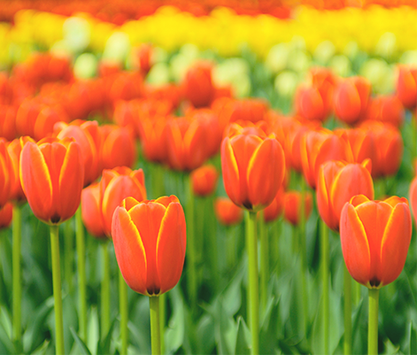
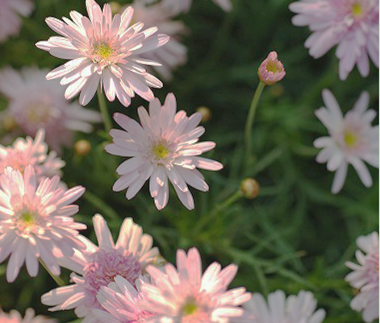
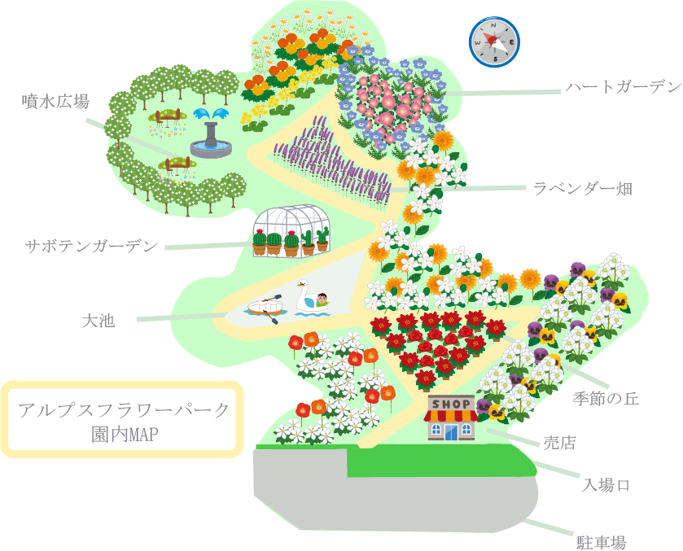
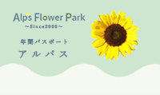
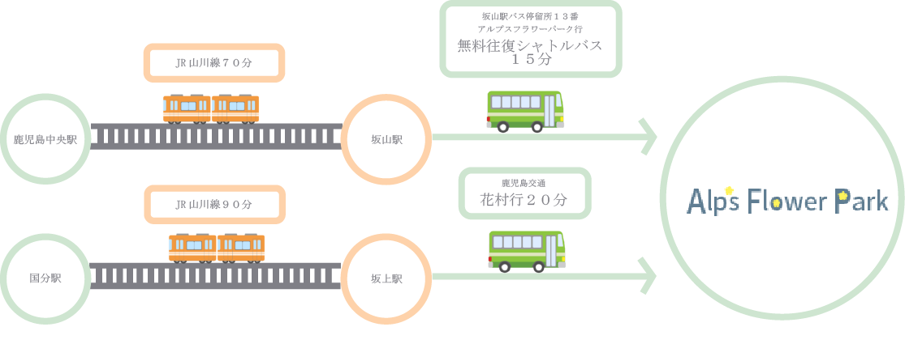

園の概要
コンセプト
忙しい日常からとき放たれ、
自然を感じ
ゆったりとした時を過ごしてみませんか？
四季折々の趣を感じられる
アルプスフラワーパークを訪れるだけで
五感が研ぎ澄まされ、
本来の自分を取り戻すことができるはず。
自分の内側に意識を向け、
小さな発見を楽しめれば、
人生は豊かでカラフルで煌びやかになることでしょう。


あなたの瞳にも
花が主人公のきらびやかな風光明美を
アルプスフラワーパークは夏は涼しく冬は穏やかな気候と
山々に囲まれた地形を活かした四季折々の花と緑を楽しめる
植物園です。 自然を感じ鮮やかな色とりどりの花々を感じ、
とびきり楽しい魔法のような時間をぜひ味わってください。
きっと忘れられない素敵な想い出ができるでしょう
園内施設・園内マップ
園内マップ

エリア一覧
営業時間・料金
営業時間
| 開園日 |
1月4日～12月27日 |
| 開園時間 |
９：００～２０：００（入園は１９：３０まで)
記の期間内は、フラワーパークイルミネーションの為21時までの開園となります。
※12月28日~1月3日は休園
12月4日～1月4日 開園：09:00 閉園：21:00（入園は20:30まで）
|
| 休園日 |
１２月２８日~ １月 ３日 |
料金について
| 高校生以上 |
個人５００円 |
団体４５０円 |
| 小・中学生 |
個人３００円 |
団体２５０円 |
| 幼児 |
無料 |
※身体障害者手帳、療育手帳及び精神障害者保健福祉手帳の提示のあった方、及びその介護者（1名）は
無料です。
※鹿児島県内の小・中学生及び高校生が教育活動の一環として入園する場合は無料です。
（事前に減免申請書を提出して下さい。）
※鹿児島県内の児童福祉施設、身体障害者更生援護施設、知的障害者援護施設の入・通所者及び引率者が、
教育・訓練・更生等の活動の一環として入園する場合は無料です。
（事前に減免申請書を提出して下さい。）
※鹿児島県内の小・中学生がこどもの日に入園するときは無料です。
※駐車場は無料です。（乗用車525台・バス7台）
※7月14日の鹿児島県県民の日に入園するときは無料です。
※鹿児島県居住の70歳以上の方は入園料が無料です。（かごしまのシニアお出かけ促進事業）
※鹿児島県居住の小・中・高校生は、土日祝日の入園料が無料です。（子どもの入館料等無料化事業)
年間パスポート(アルプスパス)
パスポートの有効期限 料金の納入日から翌年のその前日までの一年間有効です。
有効期間中は、何回でも入園できます。受付でご提示ください。
料金 大人（高校生以上）1,200円
小人（小・中学生）600円

アクセス
交通アクセス

- 鹿児島市内から車で約90分（約60km）、山川港から車で約15分
- JR鹿児島中央駅から坂山駅まで約70分
- JR坂山駅からバスで約15分
- JR坂上駅からバスで約20分
所在地
鹿児島県鹿児島市坂山町１２６７番地
TEL ：１２３−４５６−７８９
FAX ：０９９９−３３−８８８８
MAIL ：Alpsflowerpark@icloud.com
園の注意事項
- ペットを連れて入園はできません。
- 植物及び昆虫の採集はできません。
- ゴミはお持ち帰りをお願いします。
- お弁当はお持ち込みできます。
- 園内は禁煙です。
- ドローン等の使用は、園内での操縦及び園内上空への飛行を禁止しております。
- その他、他のお客様のご迷惑になる行為及び危険を伴う行為は禁止しております。